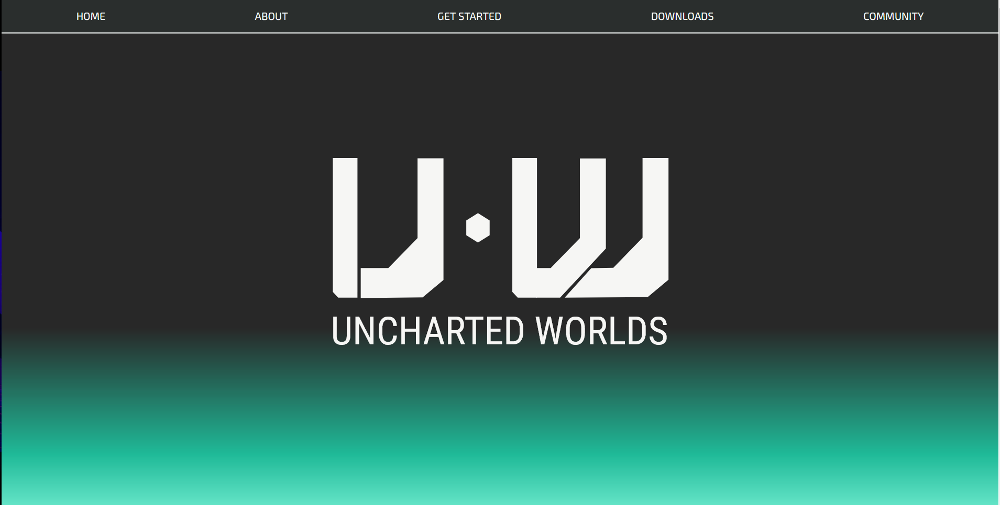
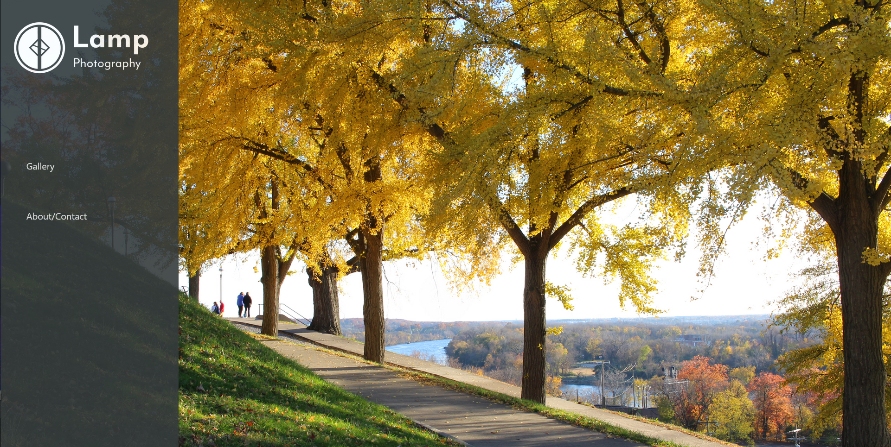
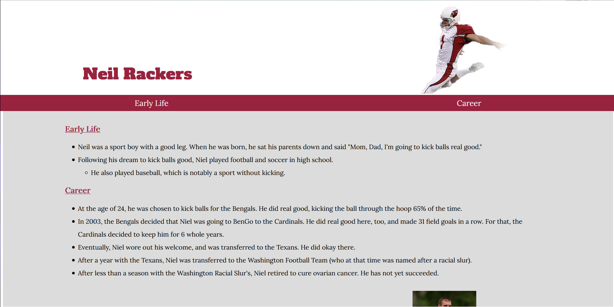

Projects
Below are a few projects I've put together. Feel free to explore them!

Uncharted Worlds Redesign
See live demoGithub Repository
I really like the RPG Uncharted Worlds. When I thought of pages I wanted to redesign for practice, this was one of the first that popped into my mind. If you haven't played the game before, I highly reccommend it!

Lamp Photography
See live demoGithub Repository
This was the first website I created. It's a static site meant to showcase my photography! I haven't added any new pictures in a while...

Neil Rackers Tribute for Free Code Camp
See live demoGithub Repository
Through the Free Code Camp Cirriculumn, you are invited to create a tribute page. I found Neil through Wikipedia's Random Article feature, and made a short tribute with the information in the article.